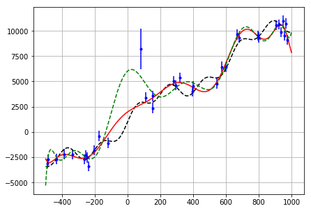

Solving a linear problem¶
Example of implementing a linear problem. We’ll use the biharmonic spline interpolation problem.
In [1]:
%matplotlib inline
import numpy as np
import matplotlib.pyplot as plt
from sklearn.model_selection import KFold
from sklearn.metrics import mean_squared_error
In [2]:
from deeplook import LinearMisfit
from deeplook.regularization import Damping
Polynomial regression¶
In [3]:
def make_data(x):
return 1000 + 10*x + 1000*np.sin(0.01*x) + 600*np.sin(0.03*x)
In [4]:
np.random.seed(4)
x = np.linspace(-500, 1000, 500)
y = make_data(x)
ndata = 35
x_obs = np.linspace(-500, 1000, ndata)
x_obs = np.random.uniform(-500, 1000, ndata)
y_obs = make_data(x_obs)
std = 500
noise = np.random.normal(scale=std, size=ndata)
y_obs += noise
y_obs[ndata//2] += 6000
y_error = std*np.ones_like(y_obs)
y_error[ndata//2] = 2000
plt.figure()
plt.errorbar(x_obs, y_obs, yerr=y_error, fmt='.b')
plt.plot(x, y, '--k')
Out[4]:
[<matplotlib.lines.Line2D at 0x7fbc9c289320>]
In [5]:
class PolynomialRegression():
def __init__(self, degree, damping=None):
self.degree = degree
self.damping = damping
def predict(self, x):
return self.jacobian(x).dot(self.params_)
def jacobian(self, x):
nparams = self.degree + 1
ndata = x.size
jac = np.empty((ndata, nparams), dtype=np.float64)
for col in range(nparams):
jac[:, col] = x**col
return jac
def fit(self, x, y, weights=None):
jacobian = self.jacobian(x)
regul = []
if self.damping is not None:
regul.append(Damping(regul_param=self.damping,
nparams=self.degree + 1))
self.misfit = LinearMisfit(data=y, jacobian=jacobian,
weights=weights, normalize=True,
regularization=regul)
self.params_ = self.misfit.minimize()
return self
In [6]:
poly = PolynomialRegression(degree=14).fit(x_obs, y_obs)
print(poly.params_)
plt.figure()
ax1 = plt.subplot(111)
ax1.errorbar(x_obs, y_obs, yerr=y_error, fmt='.b')
ax1.plot(x, y, '--k')
ax1.plot(x, poly.predict(x), '--g')
ax1.grid()
plt.tight_layout(pad=0)
[ 6.02068021e+03 1.39505367e+01 -3.11621125e-01 2.20627682e-04
5.99677863e-06 -7.74569617e-09 -4.71150692e-11 8.27679579e-14
1.43812885e-16 -3.67779988e-19 -2.59734599e-23 5.70598650e-25
-4.33606500e-28 4.37039184e-32 3.54215142e-35]
In [7]:
weights = 1/y_error**2
weights /= weights.max()
poly_w = PolynomialRegression(degree=14).fit(x_obs, y_obs, weights=weights)
print(poly_w.params_)
plt.figure()
ax1 = plt.subplot(111)
ax1.errorbar(x_obs, y_obs, yerr=y_error, fmt='.b')
ax1.plot(x, y, '--k')
ax1.plot(x, poly_w.predict(x), '-r')
ax1.plot(x, poly.predict(x), '--g')
ax1.grid()
plt.tight_layout(pad=0)
[ 1.98112107e+03 1.16326390e+01 -5.28955790e-02 1.86611219e-04
9.52564579e-07 -3.44968746e-09 -7.16690260e-12 2.12311601e-14
2.62669015e-17 -6.38477530e-20 -5.27785979e-23 1.16785353e-25
4.16625964e-29 -1.32127796e-31 5.23326887e-35]

In [8]:
class PolynomialRegressionCV(PolynomialRegression):
def __init__(self, degrees, random_state=None):
super().__init__(degree=None)
self.degrees = degrees
self.random_state = random_state
def fit(self, x, y, weights=None):
size = len(self.degrees)
if weights is None:
weights = np.ones(x.size)
self.scores = np.empty(size, dtype=np.float)
folds = KFold(shuffle=True, n_splits=5, random_state=self.random_state)
for i, degree in enumerate(self.degrees):
score = 0
poly = PolynomialRegression(degree=degree)
for train, test in folds.split(x):
poly.fit(x[train], y[train], weights=weights[train])
score += mean_squared_error(y[test], poly.predict(x[test]),
sample_weight=weights[test])
self.scores[i] = score/folds.n_splits
self.degree = self.degrees[np.argmin(self.scores)]
super().fit(x, y, weights=weights)
return self
In [9]:
poly_cv = PolynomialRegressionCV(degrees=list(range(1, 14)),
random_state=np.random.RandomState(2)).fit(x_obs, y_obs, weights=weights)
print(poly_cv.params_)
print(poly_cv.degree)
fig, [ax1, ax2] = plt.subplots(1, 2, figsize=(10, 4))
ax1.errorbar(x_obs, y_obs, yerr=y_error, fmt='.b')
ax1.plot(x, y, '--k')
ax1.plot(x, poly_cv.predict(x), '-r')
ax1.grid()
ax2.plot(poly_cv.degrees, poly_cv.scores)
ax2.set_yscale('log')
plt.tight_layout(pad=0)
[ 1.65476099e+03 1.80165816e+01 -2.29719438e-02 -8.64609633e-05
1.97599055e-07 1.42917698e-10 -4.60033341e-13 2.18875502e-16]
7
Biharmonic spline¶
In [10]:
class BiharmonicSpline1D():
def __init__(self, x_forces=None, damping=None):
self.damping = damping
self.x_forces = x_forces
def jacobian(self, x):
ndata = x.size
nparams = self.x_forces.size
jac = np.empty((ndata, nparams), dtype=np.float64)
for i in range(ndata):
jac[i, :] = np.abs(x[i] - self.x_forces)**3
return jac
def predict(self, x):
return self.jacobian(x).dot(self.params_)
def fit(self, x, y, weights=None):
if self.x_forces is None:
self.x_forces = x
nparams = self.x_forces.size
jacobian = self.jacobian(x)
regul = []
if self.damping is not None:
regul.append(Damping(self.damping, nparams))
self.misfit = LinearMisfit(data=y, jacobian=jacobian,
normalize=True, weights=weights,
regularization=regul)
self.params_ = self.misfit.minimize()
return self
In [11]:
spline = BiharmonicSpline1D().fit(x_obs, y_obs)
plt.figure()
plt.errorbar(x_obs, y_obs, yerr=y_error, fmt='.')
plt.plot(x, spline.predict(x), '--g')
plt.plot(x, y, '--b')
plt.grid()
/home/leo/miniconda3/envs/deeplook/lib/python3.6/site-packages/scipy/linalg/basic.py:40: RuntimeWarning: scipy.linalg.solve
Ill-conditioned matrix detected. Result is not guaranteed to be accurate.
Reciprocal condition number/precision: 1.0390575379584219e-17 / 1.1102230246251565e-16
RuntimeWarning)
Splines go a bit crazy when the points aren’t evenly spaced.
In [12]:
weights = 1/y_error**2
weights /= weights.max()
spline_w = BiharmonicSpline1D().fit(x_obs, y_obs, weights=weights)
plt.figure()
plt.errorbar(x_obs, y_obs, yerr=y_error, fmt='.')
plt.plot(x, spline_w.predict(x), '-r')
plt.plot(x, spline.predict(x), '--g')
plt.plot(x, y, '--b')
plt.grid()
/home/leo/miniconda3/envs/deeplook/lib/python3.6/site-packages/scipy/linalg/basic.py:40: RuntimeWarning: scipy.linalg.solve
Ill-conditioned matrix detected. Result is not guaranteed to be accurate.
Reciprocal condition number/precision: 1.57870294315431e-17 / 1.1102230246251565e-16
RuntimeWarning)
Weights don’t work when using forces beneath the data. The sensitivity of the force right under the data is 0. Use evenly spaced forces and KFold CV to find the best number.
In [13]:
class BiharmonicSpline1DCV(BiharmonicSpline1D):
def __init__(self, xmin, xmax, forces, random_state=None):
super().__init__()
self.xmin = xmin
self.xmax = xmax
self.forces = forces
self.random_state = random_state
def fit(self, x, y, weights=None):
size = len(self.forces)
if weights is None:
weights = np.ones(x.size)
self.scores = np.empty(size, dtype=np.float)
folds = KFold(shuffle=True, n_splits=5, random_state=self.random_state)
for i, nforces in enumerate(self.forces):
score = 0
x_forces = np.linspace(self.xmin, self.xmax, nforces)
spline = BiharmonicSpline1D(x_forces=x_forces)
for train, test in folds.split(x):
spline.fit(x[train], y[train], weights=weights[train])
score += mean_squared_error(y[test], spline.predict(x[test]),
sample_weight=weights[test])
self.scores[i] = score/folds.n_splits
self.nforces = self.forces[np.argmin(self.scores)]
self.x_forces = np.linspace(self.xmin, self.xmax, self.nforces)
super().fit(x, y, weights=weights)
return self
In [14]:
args = dict(xmin=x_obs.min(), xmax=x_obs.max(),
forces=list(range(1, x_obs.size//2)),
random_state=np.random.RandomState(2))
spline_cv = BiharmonicSpline1DCV(**args).fit(x_obs, y_obs)
spline_cv_w = BiharmonicSpline1DCV(**args).fit(x_obs, y_obs, weights=weights)
print(spline_cv.nforces)
print(spline_cv_w.nforces)
fig, [ax1, ax2, ax3] = plt.subplots(1, 3, figsize=(14, 4))
ax1.errorbar(x_obs, y_obs, yerr=y_error, fmt='.')
ax1.plot(x, spline_cv_w.predict(x), '-r')
ax1.plot(x, spline_cv.predict(x), '--g')
ax1.plot(x, y, '--b')
ax1.grid()
ax2.plot(spline_cv.forces, spline_cv.scores)
ax2.set_yscale('log')
ax2.grid()
ax3.plot(spline_cv_w.forces, spline_cv_w.scores)
ax3.set_yscale('log')
ax3.grid()
plt.tight_layout()
6
7